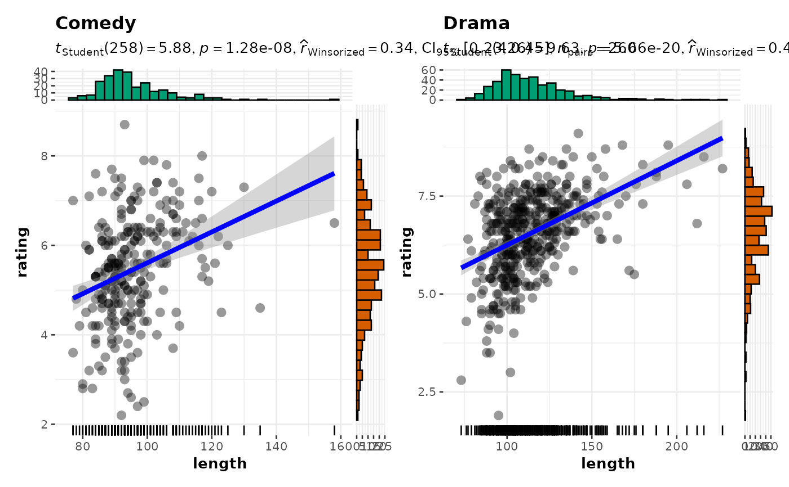
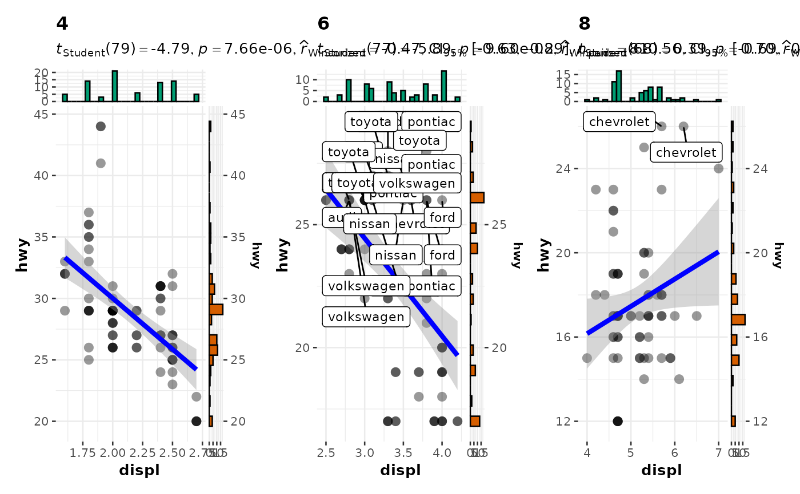
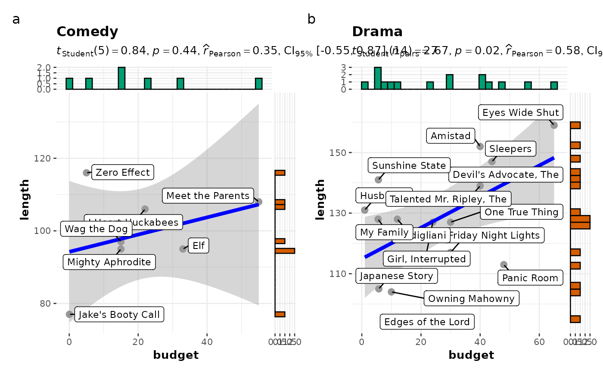

Scatterplot with marginal distributions for all levels of a grouping variable
Source:R/ggscatterstats.R
grouped_ggscatterstats.RdGrouped scatterplots from {ggplot2} combined with marginal distribution
plots with statistical details added as a subtitle.
Arguments
- data
A data frame (or a tibble) from which variables specified are to be taken. Other data types (e.g., matrix,table, array, etc.) will not be accepted. Additionally, grouped data frames from
{dplyr}should be ungrouped before they are entered asdata.- ...
Arguments passed on to
ggscatterstatslabel.varVariable to use for points labels entered as a symbol (e.g.
var1).label.expressionAn expression evaluating to a logical vector that determines the subset of data points to label (e.g.
y < 4 & z < 20). While using this argument withpurrr::pmap(), you will have to provide a quoted expression (e.g.quote(y < 4 & z < 20)).point.label.argsA list of additional aesthetic arguments to be passed to
ggrepel::geom_label_repelgeom used to display the labels.smooth.line.argsA list of additional aesthetic arguments to be passed to
geom_smoothgeom used to display the regression line.point.argsA list of additional aesthetic arguments to be passed to
geom_pointgeom used to display the raw data points.marginalDecides whether marginal distributions will be plotted on axes using
ggsidefunctions. The default isTRUE. The packageggsidemust already be installed by the user.point.width.jitter,point.height.jitterDegree of jitter in
xandydirection, respectively. Defaults to0(0%) of the resolution of the data. Note that the jitter should not be specified in thepoint.argsbecause this information will be passed to two differentgeoms: one displaying the points and the other displaying the *labels for these points.xsidehistogram.args,ysidehistogram.argsA list of arguments passed to respective
geom_s from the{ggside}package to change the marginal distribution histograms plots.xThe column in
datacontaining the explanatory variable to be plotted on thex-axis.yThe column in
datacontaining the response (outcome) variable to be plotted on they-axis.typeA character specifying the type of statistical approach:
"parametric""nonparametric""robust""bayes"
You can specify just the initial letter.
digitsNumber of digits for rounding or significant figures. May also be
"signif"to return significant figures or"scientific"to return scientific notation. Control the number of digits by adding the value as suffix, e.g.digits = "scientific4"to have scientific notation with 4 decimal places, ordigits = "signif5"for 5 significant figures (see alsosignif()).conf.levelScalar between
0and1(default:95%confidence/credible intervals,0.95). IfNULL, no confidence intervals will be computed.trTrim level for the mean when carrying out
robusttests. In case of an error, try reducing the value oftr, which is by default set to0.2. Lowering the value might help.bf.priorA number between
0.5and2(default0.707), the prior width to use in calculating Bayes factors and posterior estimates. In addition to numeric arguments, several named values are also recognized:"medium","wide", and"ultrawide", corresponding to r scale values of 1/2, sqrt(2)/2, and 1, respectively. In case of an ANOVA, this value corresponds to scale for fixed effects.xlabLabel for
xaxis variable. IfNULL(default), variable name forxwill be used.ylabLabels for
yaxis variable. IfNULL(default), variable name forywill be used.bf.messageLogical that decides whether to display Bayes Factor in favor of the null hypothesis. This argument is relevant only for parametric test (Default:
TRUE).results.subtitleDecides whether the results of statistical tests are to be displayed as a subtitle (Default:
TRUE). If set toFALSE, only the plot will be returned.subtitleThe text for the plot subtitle. Will work only if
results.subtitle = FALSE.captionThe text for the plot caption. This argument is relevant only if
bf.message = FALSE.ggplot.componentA
ggplotcomponent to be added to the plot prepared by{ggstatsplot}. This argument is primarily helpful forgrouped_variants of all primary functions. Default isNULL. The argument should be entered as a{ggplot2}function or a list of{ggplot2}functions.ggthemeA
{ggplot2}theme. Default value isggstatsplot::theme_ggstatsplot(). Any of the{ggplot2}themes (e.g.,theme_bw()), or themes from extension packages are allowed (e.g.,ggthemes::theme_fivethirtyeight(),hrbrthemes::theme_ipsum_ps(), etc.). But note that sometimes these themes will remove some of the details that{ggstatsplot}plots typically contains. For example, if relevant,ggbetweenstats()shows details about multiple comparison test as a label on the secondary Y-axis. Some themes (e.g.ggthemes::theme_fivethirtyeight()) will remove the secondary Y-axis and thus the details as well.
- grouping.var
A single grouping variable.
- plotgrid.args
A
listof additional arguments passed topatchwork::wrap_plots(), except forguidesargument which is already separately specified here.- annotation.args
A
listof additional arguments passed topatchwork::plot_annotation().
Details
For details, see: https://indrajeetpatil.github.io/ggstatsplot/articles/web_only/ggscatterstats.html
Examples
# to ensure reproducibility
set.seed(123)
library(dplyr, warn.conflicts = FALSE)
library(ggplot2)
grouped_ggscatterstats(
data = filter(movies_long, genre == "Comedy" | genre == "Drama"),
x = length,
y = rating,
type = "robust",
grouping.var = genre,
ggplot.component = list(geom_rug(sides = "b"))
)
#> `stat_xsidebin()` using `bins = 30`. Pick better value with `binwidth`.
#> `stat_ysidebin()` using `bins = 30`. Pick better value with `binwidth`.
#> `stat_xsidebin()` using `bins = 30`. Pick better value with `binwidth`.
#> `stat_ysidebin()` using `bins = 30`. Pick better value with `binwidth`.

# using labeling
# (also show how to modify basic plot from within function call)
grouped_ggscatterstats(
data = filter(ggplot2::mpg, cyl != 5),
x = displ,
y = hwy,
grouping.var = cyl,
type = "robust",
label.var = manufacturer,
label.expression = hwy > 25 & displ > 2.5,
ggplot.component = scale_y_continuous(sec.axis = dup_axis())
)
#> `stat_xsidebin()` using `bins = 30`. Pick better value with `binwidth`.
#> `stat_ysidebin()` using `bins = 30`. Pick better value with `binwidth`.
#> `stat_xsidebin()` using `bins = 30`. Pick better value with `binwidth`.
#> `stat_ysidebin()` using `bins = 30`. Pick better value with `binwidth`.
#> `stat_xsidebin()` using `bins = 30`. Pick better value with `binwidth`.
#> `stat_ysidebin()` using `bins = 30`. Pick better value with `binwidth`.

# labeling without expression
grouped_ggscatterstats(
data = filter(movies_long, rating == 7, genre %in% c("Drama", "Comedy")),
x = budget,
y = length,
grouping.var = genre,
bf.message = FALSE,
label.var = "title",
annotation.args = list(tag_levels = "a")
)
#> `stat_xsidebin()` using `bins = 30`. Pick better value with `binwidth`.
#> `stat_ysidebin()` using `bins = 30`. Pick better value with `binwidth`.
#> `stat_xsidebin()` using `bins = 30`. Pick better value with `binwidth`.
#> `stat_ysidebin()` using `bins = 30`. Pick better value with `binwidth`.
